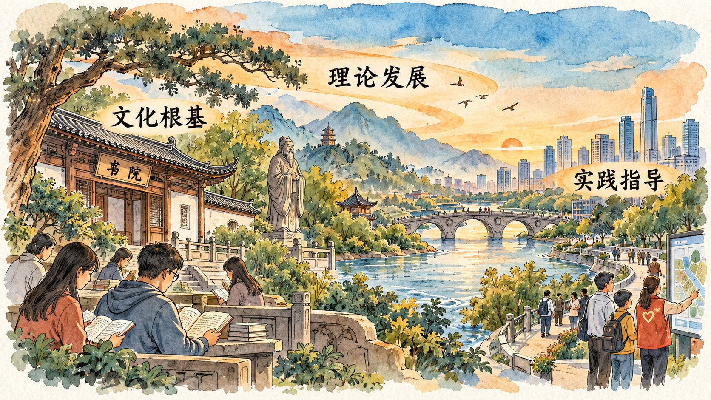

历史地位需要从什么方面理解
一种理论的历史地位，涉及它在思想发展和社会实践中的意义。理解这一部分，不能只记住评价性结论，还需要研究它继承了什么、回答了什么新问题，以及怎样指导实践。
教材指出：习近平新时代中国特色社会主义思想是当代中国马克思主义、二十一世纪马克思主义，是中华文化和中国精神的时代精华，实现了马克思主义中国化时代化新的飞跃。
教材随后从理论发展、文化根基和实践指导等方面展开。这些方面相互联系，共同帮助我们理解上述判断。
理论继承为什么包含发展
理论继承并不意味着现实问题始终不变。时代条件变化，实践就会提出新的任务，理论需要在坚持基本原理的同时作出新的回答。理解发展，必须同时看到它所继承的思想基础和面对的新问题。
教材关于新的飞跃的论述，特别强调了整体性和系统性。其含义在于，理论贡献要从整个科学体系及其对重大时代课题的回答来认识。单独摘出一句话，可能帮助记忆，却难以充分说明这种贡献。
因此，本节需要与第三节联系阅读。科学体系说明内容怎样组织起来，历史地位进一步说明这一系统认识在理论发展中的意义。两节联系起来，理论贡献才有了具体的内容依据。
为什么文化根基进入历史地位的论述
第二节已经说明两个结合。本节进一步研究这种结合对于文化发展的意义。理论扎根中国，需要联系中国的历史与现实；文化在当代的发展，也需要回应新的实践问题。两者在这一过程中发生联系。
理解文化主体性，可以从能否立足自身历史与现实提出问题、形成认识并开展创造入手。它还涉及怎样以开放态度理解和吸收其他文明成果。文化自信因此需要以深入理解自身文化及其当代发展为基础。
教材在这里既讲理论的文化根基，也讲文化发展的思想指引。把两个方向联系起来，才能理解文化内容为何构成历史地位的重要方面。

怎样理解行动指南
教材指出：习近平新时代中国特色社会主义思想，是全党全国各族人民为实现中华民族伟大复兴而奋斗的行动指南，是新时代党和国家事业发展的根本遵循。
行动指南的意义，要联系认识与实践的关系来理解。理论帮助人们认识形势、明确目标和把握方向，具体实践则需要通过制度安排、组织行动和实际工作展开。理解理论作用，应当继续说明这些联系，而不能止于复述结论。
因此，学习本节可以形成三个相互关联的认识：理论在回应时代问题中发展，扎根中国历史文化，在指导实践中体现意义。这也说明，历史地位需要由系统的理论内容和历史实践来理解，不能用某一项短期结果代替整体判断。